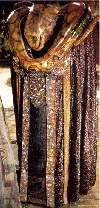

A Vorlon...
The NOTs were anonymously posted to alt.religion.scientology on May 6, 1996 by Vorlon. There were eight parts to the posting, and the contents were not optimally organized. This page is an attempt to clarify the structure of those postings, to make the material more easily accessible to beginning readers.
Key Points:
NOTS 1: The theory of NOTS is explained; a special handling for OTs who have been run on Dianetics since Clear. Before doing the highest level in Scientology, OT VIII, you have to do NOTS. The End Phenomenon is called "cause over life". NOTS contains data from OT-III that had not been released before. (Before NOTS was released LRH said that "I have all the data now, but only that given here [OT-III] is needful.") Dianetics can't be run on clears as it will apply to a person's body thetans instead of himself, thus confusing things. It is important to understand that the lower levels of Scientology can lead to wrong results as a person thinks an auditing procedure applies to him, when in reality it applies to his body thetans. In general the NOTS is about different demons called body thetans, that are hidden or in other ways difficult to exorcise. It is explained that OT-III gives only an apparency that all demons are gone; the Galactic Overlord Xenu filled the Earth with demons, and that's why there will always be more evil demons. NOTS is mainly concerned with demons that don't consider themselves alive.
NOTS 2: One can't run engrams or do dianetics after clear, because a Clear has erased his own bank; it will apply to a person's demons. LRH states that Clears should proceed to the OT-levels quickly to avoid these problems.
NOTS 3: A secondary, engram, Dianetic Assist or narrative should not be run on Clears or OTs. A bad secondary can be handled with Date/Locate. A recent secondary engram is a restimulation of clusters with earlier mutual incidents.
NOTS 4: Discussion about using dictionaries for people who haven't done the OT-levels. Auditing attitude should be highly impersonal when dealing with demons telepathically. When a demon leaves the body the Scientologist may sometimes view the world through the demon.
NOTS 5: The reason why demons hang together (clusters) is because of misconception of different things, such as space and time.
NOTS 6: Some lower level Scientology technology can be used to exorcise demons by applying it to the demons. Engrams might be caused by demons copying themselves. Discussion about the problems which occur when demons are stuck in the past. Some demons will protect others from being detected by auditing.
NOTS 7: Attack on psychiatrists, who won't accept Scientology's view about the thetan's relation to the body. Demons believe they are something they are not; this causes different problems in exorcising.
NOTS 8: About basic principles of the NOTS rundown; as discussed earlier, the main problems are the demons who have misconceptions. Mainly about identity. The beginning of all this is when a thetan copies the physical universe around him, or a misconception of "all-are-one". Other "only reasons" why demons hang together (see #5) are mentioned; misapprehension, agreement and shared experience.
NOTS 9R: Because of the nature of demons that hang together (clusters), Date/Locate must be accurate. It is important to know when the demons first met; singles are easier to handle. Type of incident is important, as on the OT-levels. Copies of demons may appear, as well as false dates given by demons.
NOTS 10: Discussion about why there are so much evil demons to be exorcised.
NOTS 11: Before doing NOTS, past auditing has to be checked for errors. Repair of clears according to the general theory of NOTS. Demons may also be "Clear", which causes problems. Criticism of some auditors.
NOTS 12: Detailed explanation about checking past auditing.
NOTS 13: Paperwork needed for the procedures.
NOTS 14: By asking demons where they have gone some problems can be handled.
NOTS 15: Demons have misconceptions about being stuck to a body or other demons. What a person considers his body is in a sense made up entirely of demons. There are different formations of demons; a "thetan hand" may be used to separate them. According to LRH all space isn't actually full of demons, it only seems that way.
NOTS 16: When demons are leaving it is possible to view the world through their senses. There are also other similar phenomena.
NOTS 17: A person may recognize that his body and other objects are made up of demons, and perceive them as transparent, when he begins to learn how to see Hubbard's "real" world. The person will have some difficulty to perceive his own body. The End Phenomenon of the Rundown is a person with a transparent body and a clear area around it, and he realizes he's alive and himself to a great extent.
NOTS 18: About session planning; usually better luck at the beginning of a session. You should not watch movies or TV when doing NOTS. Use of 500 Milligrams Vitamin B1 (Thiamine Hydrochloride) daily is recommended for reasons related to nightmares etc.
NOTS 19: About E-meter reads when dealing with dead demons, which are difficult to detect.
NOTS 20: About handling the E-meter during NOTS.
NOTS 21: A demon or a person may perceive things from another time or location in space or be distracted by thoughts. This creates problems.
NOTS 22: Discussion about hiding demons making up mass and shutting down nerve channels when they wake up. Some demons run away from things that don't even exist.
NOTS 24: Repair list for errors made in auditing.
NOTS 25: Some demons resist change, and won't be easily handled.
NOTS 26R: Checklist for auditing procedure.
NOTS 27: A body as perceived by a thetan is transparent. Before being OT, the thetan (here: a person doing NOTS) will see demons instead. The demons are so much like the thetan that they can affect the way thetans look at existence, while matter, energy, space and time can't affect the way thetans perceive the world. NOTS is mainly concerned with things that think they are a part of a person's body but are not. Detailed instructions about procedure under different heads. Warning about trying to repair all or too much past auditing. Discussion about what phenomena to possibly expect in auditing at the different steps. A general exorcising pattern of difficult demons followed by several easy ones described. Discussion about demons making a ridge together, and handling of this and remnants of these. Cognitions or End Phenomena to be expected at the different steps are the clearing up of body distortions, a cognition of 'I am well', awareness of the correct relationship between demons and your own body, intense cognition of personal identity. Discussion about chronic somatics; sometimes these can disappear during NOTS, although it's not to be despaired if this doesn't happen at once. One can experience an aura, meaning demons formed into the shape of a body, or demons in connection with different organs. Mention of demons that are "probably the root of sickness". A cognition is that one can do anything other beings can, and an End Phenomenon is a lot of somatic blows. A Pre-OT can be knocked by the mass of demons. After handling this an End Phenomenon is the ability to look at parts of the body that couldn't be looked at before. The body should be cleaned up of demons until the body is clean and transparent, sometimes using different processing on different demons. The End Phenomenon of NOTS is when the person has a transparent body, a defined relation to other people's difficulties and when he finds himself to be alive and himself.
NOTS 28: A person will at first advance rapidly when he realizes that what he thought was his body is actually ridges composed of demons. After that it gets more difficult, as demons may be out or in and confused. The demons are described as hypnotized, as they are suggestible and invent their own problems. (Someone has said that Scientologists are Hubbard's body thetans - this sure says it all). The demons identify themselves with pictures or perceptions of other demons. A parallel is drawn to the fact that young people living in the computer age watch too much television and all have electronic calculators. Discussion of the reasons of pictures. Discussion of stuck flows, which are a part of forming clusters. A process for difficult ridges of demons is described.
NOTS 29: If one can't complete NOTS for one reason or another, one should not receive other auditing before returning to complete.
NOTS 30: While being on NOTS, one should not do other grades, rundowns or other auditing. Exceptions are some assists. Mentioned that exorcising demons will "probably cure some allergies".
NOTS 31: Sometimes demons may be exorcised with the so called "thetan hand" technique. You imagine a "thetan hand", and then use it as a knife to separate demons from different things. After that the demons are easier to handle. A similar procedure can be used for handling things that won't talk back.
NOTS 32: Problems with chronic somatics may be handled by finding missed demons, such as invisible ones. Demons can also suppress others. Phrases such as "no stomach for it" may confuse demons. Again it is mentioned that "probably" the root of some sickness is in something at least partly caused by demons that can be audited.
NOTS 33: Discussing attention put to one's body and outside it. Invisible demons trying to get attention may draw a person down to their level. The invisible demons trying to get attention have to use pictures and mass. This is also an explanation for life, why thetans use bodies, because they need attention. The central tenet of acknowledgement in Scientology works because it's about attention. Problems occur when demons try to avoid or to get attention. As with many other procedures in NOTS, a way to handle it is to go to the beginning, in this case the first time the demon wanted attention. It is described how demons and somatics may be handled by the so called attention beam.
NOTS 34: Eight steps to fully handle a physical condition. Discussing exorcism of demons from different body parts, auditing is done under heads such as "Cures for illness". At least in part illness is caused by demons that can be exorcised.
NOTS 35: Some evil demons may go from one generation to another, causing the demons to have a genetic misidentification, believing they are genetic. There is also the possibility of evil spirits invading others in past lives and during this life. Therefore it's important to exorcise the right demon for the right reasons. Relations to other people with evil demons may also get better as a consequence of correct exorcism.
NOTS 36: Handling of some erratic E-meter needle movements (rockslam). These indicate very evil demons. It's related how Hubbard discovered that a gang of demons made a profession out of killing patients in hospitals. Exorcism is recommended.
NOTS 37: Some demons believe they are many, an army or such (collective identity). These are difficult to exorcise. This is related to the implant "we are all one", "all is one". This is also related to Socialism, where everyone belongs to "The State". The bulletin goes on to attack TV, drugs and "super association with Death". Individuality in collective activities is encouraged.
NOTS 38: All beings are sure they will go down the scale and are afraid to become cells and molecules (basic fear).
NOTS 39: The (memory) chains mentioned in Dianetics may cause problems but may be handled by exorcism.
NOTS 40: The role of the auditor in NOTS explained; he should help to exorcise demons.
NOTS 41: There may be problems if someone has run engrams on OT-III. It's mentioned that one could "run into despair" on the previous OT-levels, and this should be handled by NOTS.
NOTS 42: Repair list for problems on OT-III.
NOTS 43: Amends and clarifies #27, related to #41-42.
NOTS 44: A wrong item (L & N error) may make the demons very angry.
NOTS 45: When demons are only partially exorcised (see #16) they can strike back at one's body with energy or mass. A demon only partially exorcised is connected to the mass of other demons, which means the solution is more exorcism. The result may sometimes be a feeling of relaxation.
NOTS 46: It's important for demons as well as for Scientologists to avoid so called misunderstood words when applying Hubbard's doctrines. A person might hear something different from what his demons hear. Some demons don't speak English, and Hubbard points out that dead demons don't understand any language. This is one of the reasons why demons try to communicate with pictures. A solution is to communicate conceptually with the demons, without using words.
NOTS 47: Rather technical about Valence Technique procedure for handling errors. A system of punishments/sanctions for incomptenet auditors is mentioned, and as it's LRH policy, no executive may "get reasonable about this". It is related that auditing errors may sometimes be caused by the auditor's own similar problems. A summary is included in this bulletin. So called Inspection or Valence techniques will usually exorcise demons, and one should not continue the exorcising too long, as this could lead to demons copying themselves.
NOTS 48: One should not audit someone who is ill, has lots of problems or is on a major rundown or such. Auditing someone in a difficult situation requires, as usual, perfect auditing. It is stated that NOTS could make it worse for a person if not handled correctly. One should remember to adress their problems during auditing. Not heavy or long sessions, ended as soon as the troubled feels better. Because of all the demons around, which causes all the problems, one should not ask "do YOU have..." but "is there a problem", so as not to "evaluate" whose problem it is. In this way the correct demon may be found, adressed and ultimately exorcised. Unburdening ("exorcism will work tomorrow") and some case histories are discussed. There's also a summary.
NOTS 49: More about Valence Technique (see #7, #47). Seek and destroy demons. OT-III techniques may also be used. Again mention of somatics; one demon by himself can't make a somatic, you need two beings. Somatics encountered on NOTS usually occurs when there has been an error. It's noted that auditors should not run NOTS as a robotic rundown. Mistakes have been tracked down to misunderstood words. The "sociological impact" of NOTS is mentioned; exorcising demons should make a better world, shouldn't it?
NOTS 50: This bulletin handles demons that are into drugs. It contains some new data in addition to the purification rundown and OT drug rundown. Detailed info on the procedure, bulletin signed by Founder - assisted by Senior Case Supervisor International.
NOTS 51: In NOTS answers come as concepts, not as pictures.
NOTS 52: Even more additions/changes to Valence Technique (see #47, #49). Some retractions regarding procedure. Some demons answer but there's not a good read on the E-meter. In these cases the demon has to be encouraged to speak up. When learning NOTS new techniques should not be tried out before experiencing nice things with those one already knows. Bulletin signed by Founder - as assisted by Senior Case Supervisor International.
NOTS 54: Even more clarifications about Valence Technique (see #52 etc). The auditor should trust the E-meter and not ask the Pre-OT if the demons are gone. Bulletin signed by Founder, Assisted by Senior Case Supervisor International Assistant.
NOTS 55: At times during NOTS it's not good to work the same (body) area twice in succession.